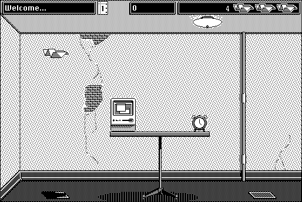

Download
glider_4d.zip (569K) Glider 4.10 repackaged into a zipped hfs disk image and checksum file. The disk image can be mounted with Mini vMac.
glider_4.zip (569K) Glider 4.10 in the original format.
copyright: Casady & Green, Inc., but now reverted to author
mod date: Dec 9, 1994
license: freeware
last known url
(gone)
Game by John Calhoun featuring a paper airplane flying through a house. Glider has a Wikipedia article. The source code is on GitHub (or see below).
Glider for OS X and iOS is still available at the author's new website.

Download Source
glider_4-master.dsk.zip (1.3M) Glider Source repackaged into a zipped hfs disk image and checksum file. The disk image can be mounted with Mini vMac.
glider_4-master.zip (1.3M) Glider Source in the original format.
If you find these downloads useful, please consider helping the Gryphel Project, which hosts them.
Here are the md5 checksums for the downloads, signed with Gryphel Key 5:
--------- GRY SIGNED TEXT --------- fc95249384b296df2aaebb11c9e1ab1d glider_4d.zip 89732c2a24e17c92ab6278279adece00 glider_4.zip f23442f9f19fbf4f23a146f0427cb4d7 glider_4-master.dsk.zip ea257113cc5a4f09755b8c8893c5a0d1 glider_4-master.zip ------- BEGIN GRY SIGNATURE ------- Gry/4Xa8CFcUzxdN/HtMuPjz/9hzIj5zVJuAaYMDAQeS0RR3KsR0HRNug+ujwnDT a8S9KEbkv+bxyukZfSX3ro6T1oL7gk2sIyYnr+2kqcqlnTLKzjHfoh+v+34etcC5 aDYBOhwrdwhjX7xbCCSYH3+nziBQu0gk4H4lU4+NPj2AwQ2XSQdx4704DDHBopkt -------- END GRY SIGNATURE --------